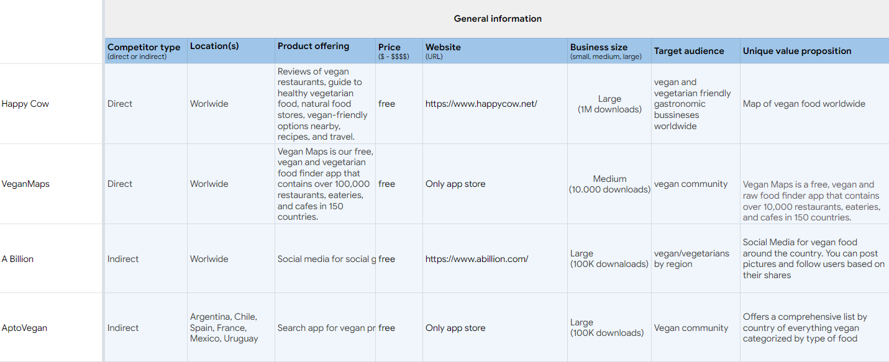
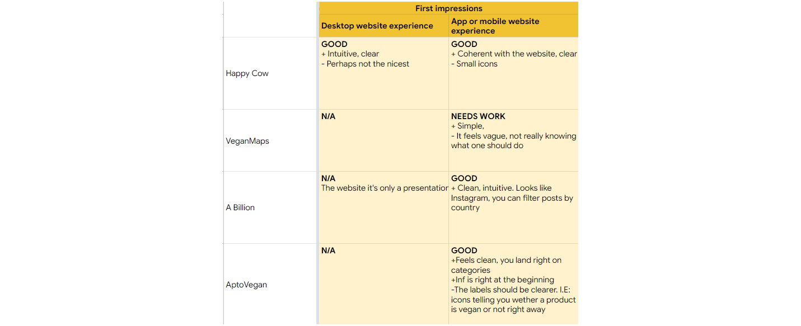
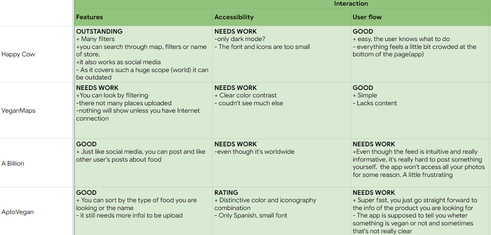
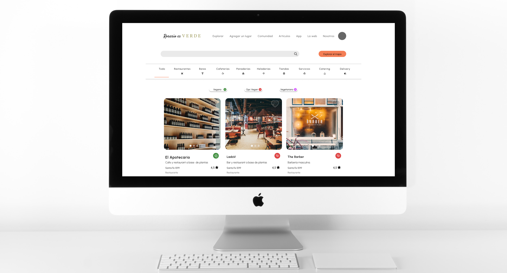

Keeping it simple
I audited 2 direct and 2 indirect competitors. The study revealed some good features that I
implemented in my design like the ability for users to upload their photos, a link to each place's menu, etc.
It also allow me to see how the filters work and realized that the use of too many colors in a small layout like
that of a cell phone can be a little overwhelming.
All in all, it showed that there is plenty of room for improvement to provide a smoother interface.
-

-

-

-

Now, the fun part
Test, test, test...
Findings
What changed?
Refining the design
Accessibility Considerations
- Mobile: Font no smaller than 14p.
- Icons are accompanied by text.
- Color contrasts meet Material Design standards
- Voice search
- Currently working on a dark theme.
Website version
After creating the dedicated mobile experience, I started the whole design thinking process again to consider different use cases.

- What are my users' motivations and goals when using this product on a desktop?
- How can the companion website support the dedicated mobile app?
The desktop version complements the app with added features like pages with information, online shopping, etc.
Takeaways
This project was challenging since it involved making a lot of information available in the clearest and fastest possible way without making it too crowded or confusing.
As it involved the creation of many different filters to scan information based on common criteria, I learned the importance of having a system to follow that can expand easily but allowing for
flexibility at the same time as one needs to be constantly iterating on each phase.
This design was meant for social good and it is a topic that is close to my heart so I really enjoyed it and learned a lot along the way.